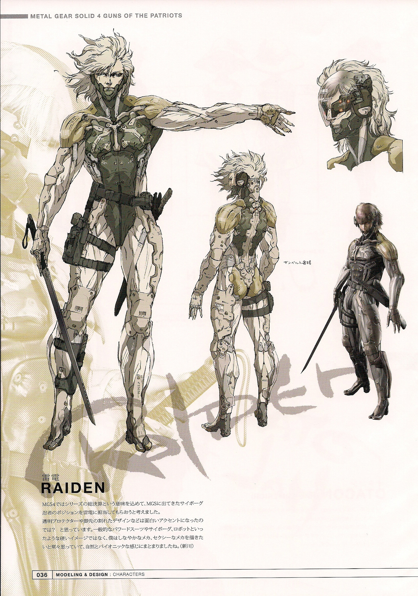
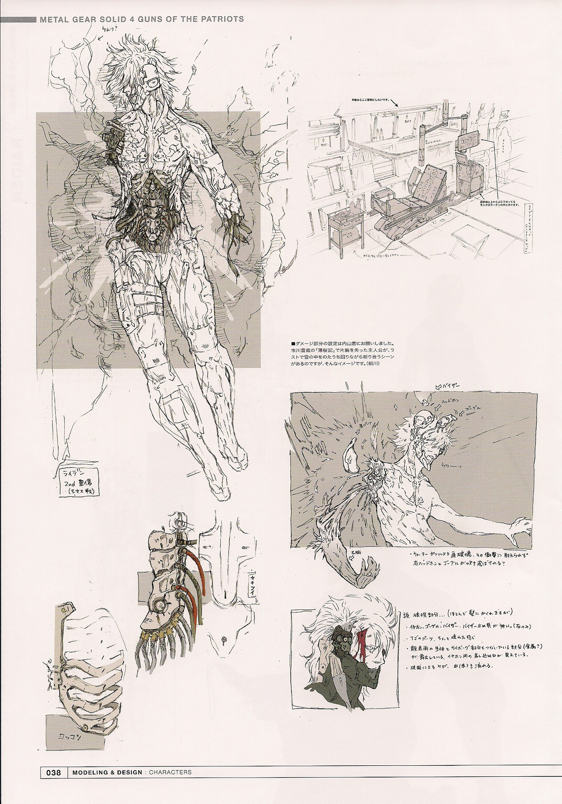
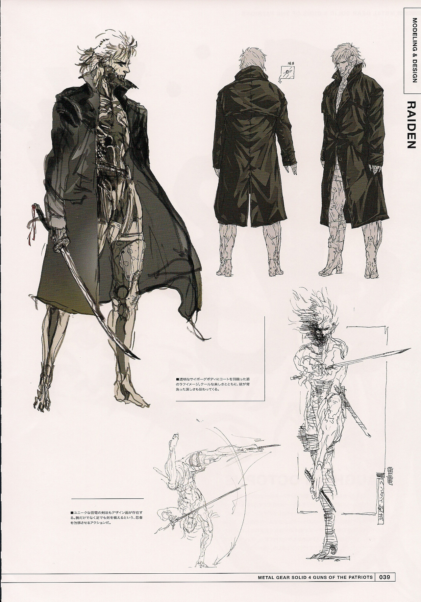

Raiden concept art - “Master Artworks - Metal Gear Solid 4”.
Raiden is sort of the cyborg that started it all for me. My initial interest in his design (particularly in Rising) led to my overall interest in “robot” concepts, which ultimately led to the creation of this blog.